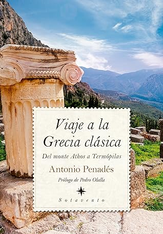

Viaje a la Grecia clásica
Reseña por Jorge I. Zuluaga

Ver detalles · Ver reseña en GoodReads (necesita cuenta)
La razón de la eficacia de estos mecanismos es bastante clara, tanto para quienes los han usado sistemáticamente, como lo declara el mismo Antonio Penadés en este delicioso libro de viajes, como para quienes estudian el cerebro.
Y es que la memoria se afianza cuando logras asociar una experiencia vital, un lugar concreto que visitaste, con las historias de esos lugares. Un topónimo, por ejemplo, se hace inolvidable porque lo asocias con un paisaje que viste, con un olor, con una sensación corporal o, aún mejor, con una conversación que sostuviste en el sitio mismo.
De forma análoga, la novela histórica, a pesar de sus altas dosis de ficción —y sus inevitables sesgos—, permite asociar personajes o eventos del pasado con tramas de vida, conversaciones e hilos argumentales que, si bien —repito— posiblemente nunca ocurrieron, apelan a uno de los mecanismos más poderosos de la memoria: los relatos, el chisme.
A través de «Viaje a la Grecia clásica» y de libros de viajes como este, las personas que no hemos tenido la suerte de someter a nuestra memoria a las experiencias directas de estar en los lugares en los que ocurrió la historia podemos recibir, sin embargo, un efecto de segunda mano que, si bien no es tan efectivo como la experiencia directa, si es conseguido de la pluma de un contador de historias competente como Antonio, sigue siendo mejor que la lectura de un texto de Historia convencional.
Al menos es así como me siento yo después de leer este libro y el primero de esta entretenida e ilustrativa bilogía «Tras las huellas de Heródoto».
Mi primera aproximación a la Historia de Grecia fue a través del clásico de Isaac Asimov, «Los griegos». En ese libro tuve la oportunidad de tener un primer vistazo general a la grandiosa historia del conjunto de pueblos que, en buena medida, marcaron el desarrollo del resto de la historia de lo que conocemos como Occidente.
De lo que leí en ese libro, sin embargo, no me quedó casi nada.
Después me atreví a leer los libros de Heródoto, que, si bien se reducen a una estrecha ventana de tiempo, te dan una perspectiva personal, desde el tiempo mismo de los hechos, que es difícil reemplazar con textos académicos modernos.
Lamentablemente solo recuerdo una pequeña fracción de las historias de Heródoto, y la mayoría gracias precisamente a los libros de viajes de Antonio Penadés.
Mi siguiente aproximación a la historia de Grecia, ahora con un poco más de conocimiento, fueron las novelas de Marcos Chicot: «El asesinato de Pitágoras», «El asesinato de Sócrates» y «El asesinato de Platón».
Allí empezó la magia.
Recuerdo mucho más sobre la historia de la Grecia clásica, los lugares, las batallas, los personajes clave, pero también las costumbres religiosas, la vida cotidiana y el funcionamiento de la sociedad en general, cuando pienso en las situaciones que se desarrollan en esas novelas; mucho más, por lo menos, que lo que me quedó de la lectura de Asimov o Heródoto.
Los libros de viajes de Antonio Penadés han logrado consolidar, si no un conocimiento profundo de la historia de Grecia, al menos una familiaridad que nunca creí que podría conseguir con este importante capítulo de la historia de Occidente.
En «Viaje a la Grecia clásica», Penadés continúa el recorrido iniciado en la costa occidental de Turquía en «Tras las huellas de Heródoto». En ambos libros, el autor sigue los pasos del ejército del «rey de reyes» persa, Jerjes, en su intento (afortunadamente fallido) de invasión de Grecia en el siglo V a. e. c.
El recorrido de este libro se centra en las costas norte del Egeo y en el occidente del territorio griego y macedónico, para terminar en un apasionante capítulo —del libro y de la Historia— que se desarrolla entre las montañas y el mar de las Termópilas.
Como buen libro de viajes, el texto es una agradable y entretenida mezcla de anécdotas personales, bellas descripciones de los lugares visitados, reflexiones de talante filosófico, académico y hasta espiritual y, por supuesto, mucha Historia; muy buena Historia, Historia que se recuerda mejor por estar acompañada de un relato de viajes.
Varios elementos hacen de esta segunda parte del viaje de Penadés, siguiendo los pasos de los ejércitos persas, diferente del primer libro.
En primer lugar, Antonio desvía su camino en un par de oportunidades para conocer más de cerca la situación de los refugiados sirios que buscan entrar a los países ricos del centro y el norte de Europa a través de la frontera que ofrecen justamente los países del Egeo (Grecia, Macedonia, Turquía) y sus vecinos inmediatos (Bulgaria, Serbia).
Estos desvíos no le restan un ápice al interés del libro, en tanto que, como comenta ampliamente Antonio, lo que viven hoy los sirios —y más recientemente los ucranianos— es exactamente lo que vivieron los pueblos de la Hélade en multitud de oportunidades por las guerras fratricidas o las invasiones externas que enfrentaron. Visitar un campo de refugiados sirios en el siglo XXI es transportarse a las que también fueron las penosas condiciones de las personas que perdían todo después de las guerras de la antigüedad y que tenían la «suerte» de escapar a la violación, la esclavitud o la peor de las muertes. En estos apartes del libro se le sale a Antonio el periodista y el resultado es atractivo.
Otro de los desvíos que toma Antonio se produce cuando visita la península del monte Athos, de cuya existencia me vengo apenas a enterar a través de este libro. Esta península boscosa y montañosa, una proyección de los tres dedos de la península Calcídica, es un lugar habitado exclusivamente por monjes y visitado por peregrinos de religión católica apostólica ortodoxa (o cristianos ortodoxos, como los llamamos en breve el resto de la cristiandad). El monte Athos —como se le llama en breve— es un paraje geográfico casi congelado en el tiempo entre la Edad Media bizantina y el final de la monarquía rusa.
La descripción de los lugares, en particular del monasterio que habitó Antonio al menos por una jornada, y de las costumbres de los monjes, es simplemente asombrosa. Creería que amerita un libro entero que espero un día Antonio se anime a escribir.
Solo lamenté, y esto aplica para la visita al monte Athos y para el resto del texto, la falta de algunas reflexiones o de unos párrafos críticos escritos por Antonio sobre la total exclusión de las mujeres no solo en este lugar, sino en general en todas las historias narradas durante su viaje.
Si bien puedo entender que la Grecia clásica, así como la Roma bizantina, no era un lugar en el que las mujeres, a excepción de las muy poderosas y cercanas a los reyes, obispos o tiranos, tuvieran un papel protagónico, no es este un tiempo en el que se pueda escribir un libro de Historia sin que se reivindique el rol central de las mujeres en esas sociedades, así sea de forma superficial.
También es menester de los autores y, por supuesto, las autoras del presente, problematizar el papel secundario que los narradores del pasado dieron a las mujeres o su inaceptable exclusión, si no como parte integrante de las comunidades religiosas, sí como peregrinas o turistas en lugares como el monte Athos. ¿No es increíble acaso que haya un lugar en el mundo, de una belleza natural y un atractivo cultural y religioso como este, que no pueda ser visitado por la mitad de la humanidad? Me quedé, insisto, esperando una o dos palabras de Antonio sobre este monumental despropósito.
Tampoco lo juzgo. Cada quien hace con su libro lo que quiere. Pero me encantaría saber qué piensa de esto o ver reflejada alguna reflexión suya en un libro futuro.
Los capítulos dedicados a la historia de la guerra del Peloponeso, que ocurrió después de la fallida invasión persa, así como a la sociedad griega de su tiempo, fueron los que más disfruté. En esos capítulos aflora la capacidad divulgativa de Antonio, de quien esperaría leer en un futuro un texto exclusivamente de divulgación, no solo de la historia de Grecia, sino de otros pueblos y culturas de la antigüedad.
El capítulo más emocionante y bien escrito de todo el libro es justamente el último. Vale la pena llegar hasta el final para leer el relato contado por Antonio de la batalla de las Termópilas. Un relato que no se restringe a repetir los datos más bien manidos de cómo varios centenares de hoplitas espartanos, pero también, al menos al principio, otros venidos de ciudades-estado de toda Grecia, enfrentaron al monstruoso ejército de súbditos de Jerjes.
Antonio nos narra, como si se tratara de una buena novela histórica, la manera como los espartanos decidieron emprender la defensa de la «Liga Helénica» y cómo los 300 valientes guerreros, encabezados por su rey Leónidas, se despidieron de sus familias para atravesar 400 km, acompañados por esclavos —que nunca son mencionados en otras historias— y otro millar de hoplitas venidos de ciudades-estado de toda la Hélade.
Qué queda por decir.
Dichosos los ojos de todas las personas que pueden visitar Grecia con el conocimiento de la historia que tiene alguien como Antonio Penadés.
Espero que antes de morir Apolo me permita ver el mar Egeo al menos una vez y, con más suerte, visitar, acompañado de estos libros y de buena compañía, algunos de los lugares que este libro nos deja con ganas de conocer.